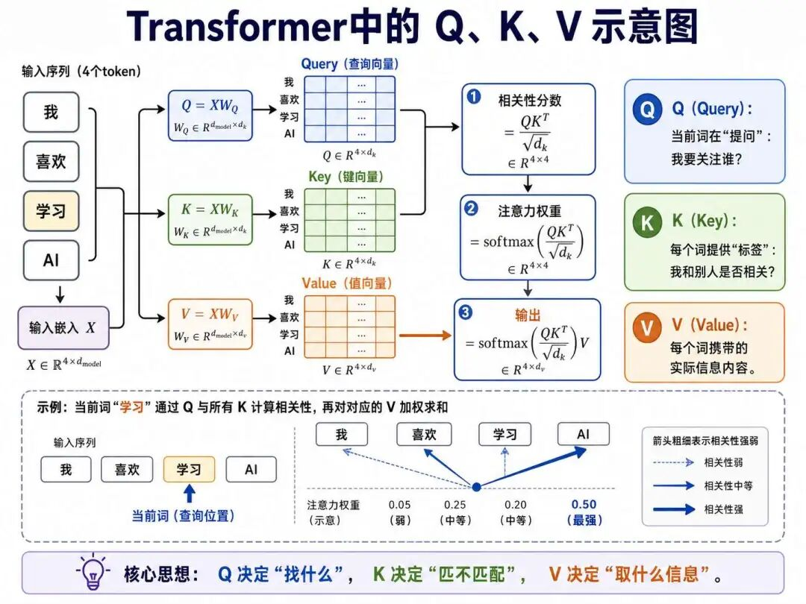
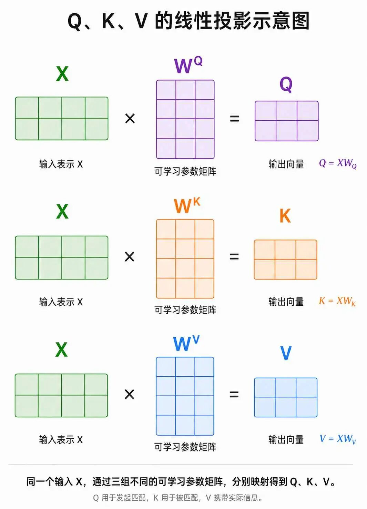
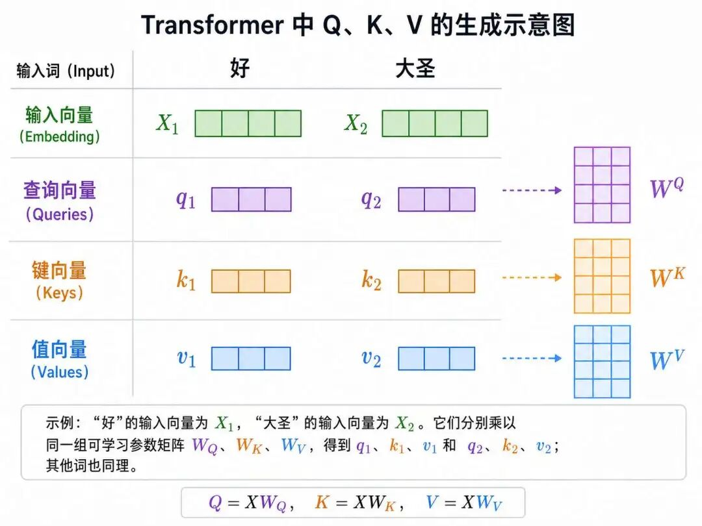
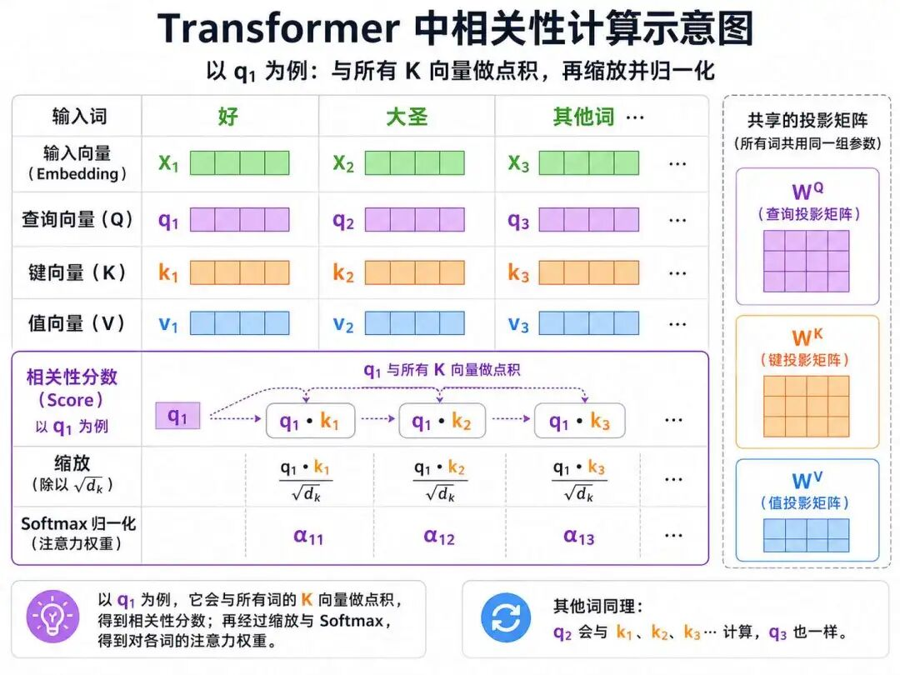
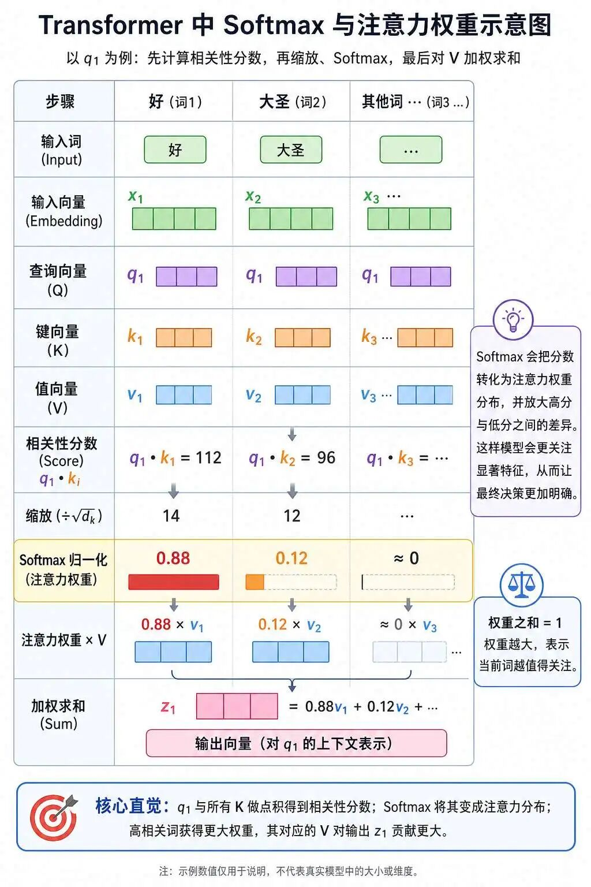
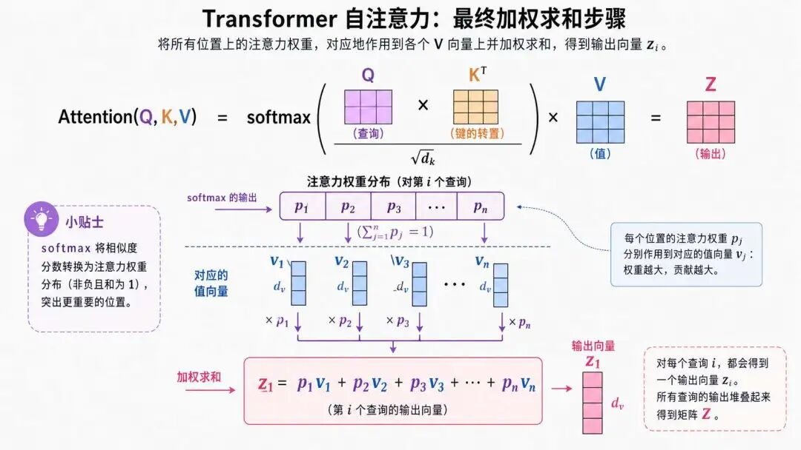
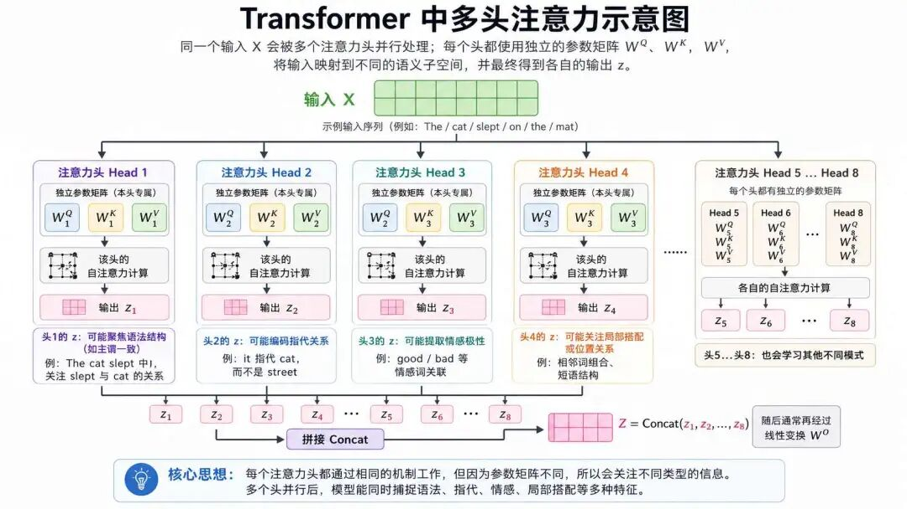
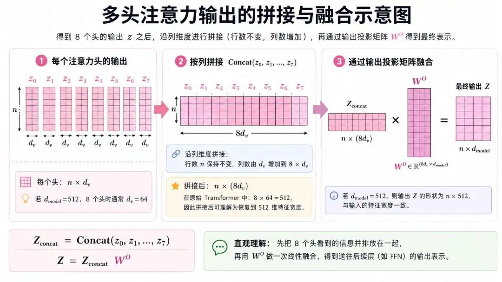
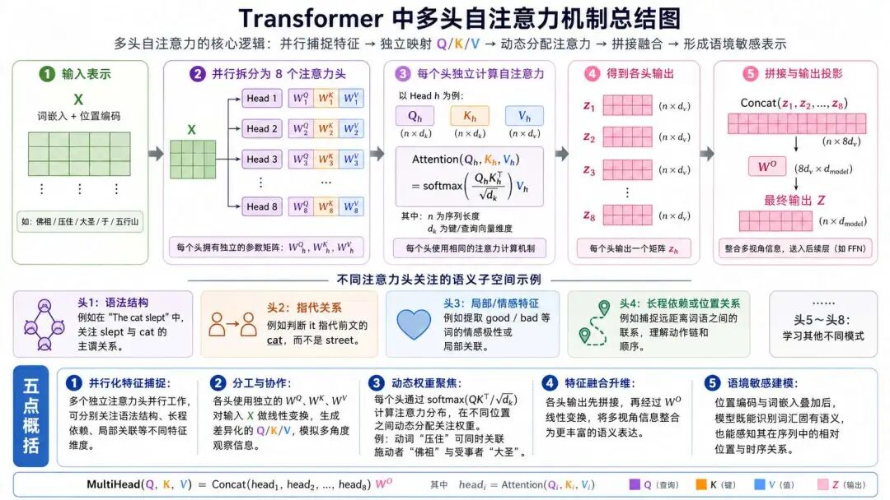

“智子工程，简而言之就是把一个质子改造成一台超级智能计算机。”--《三体》刘慈欣
上一篇我们拆解了 Transformer 的输入侧--分词、位置编码与输入 embedding，这一篇我们从人类认知的“选择性注意”说起，看看多头注意力机制是如何借鉴这一思想、又为何需要多个注意力头的。
20世纪中叶，心理学家通过实验发现人类认知存在 “选择性注意”现象：当视觉系统每秒接收约8.96兆比特信息时，大脑会通过视网膜中央凹的敏锐度优势，优先处理关键信息，如突然出现的危险信号。这种“视觉显著性”机制启发了计算机科学家对信息筛选机制的探索。
Transformer中的多头注意力机制的设计则直接借鉴了这种人类大脑处理信息时“多维度并行关注”的特性。例如，当我们阅读一段文字时，大脑会同时关注词汇的语法结构、语义关联、上下文逻辑等多种信息。
这种认知机制被抽象为多个独立的“注意力头”，每个头对应一个独立的语义子空间，类似于团队成员分工协作：产品经理、工程师、测试人员各司其职。
其次，原始Embedding向量需要表达词汇的语法、语义、上下文逻辑等多维度信息，而单个注意力机制难以覆盖所有特征。
多头机制通过将高维向量拆分为多个低维子空间，如Transformer中的8头机制将512维向量拆分为8个64维子空间，模拟了卷积神经网络中多通道特征提取的思想。
这种设计灵感直接来源于对Embedding空间复杂性的解构需求。
最后是研究者观察到单个注意力头容易过度关注局部特征或自身位置，而多头机制通过并行计算多个不同的注意模式，每个头关注不同模式，再通过拼接和线性变换实现特征融合，从而提升表示能力与建模的稳定性。
我们说注意力头是用于捕获多维特征而设计的，那么在自然语言领域，存在哪些维度的语言特征呢？
首先是语法结构维度，包含了一下语法结构：
1） 词法句法规则
指的是自然语言通过词性（名词、动词等）和句法结构（主谓宾、定状补）构建意义框架。例如英语的时态变化（run->ran）和中文的语序规则，例如“猫追老鼠”的不可逆性。
2） 依存关系分析
指的是采用依存句法树解析词语间的逻辑关联，如“警察->逮捕->嫌犯”构成动作链，通过短语结构分析识别NP（名词短语）、VP（动词短语）等语法单元。
3） 语言类型差异
指的是不同语系存在结构特性差异，如英语的SVO（主谓宾）与日语的SOV（主宾谓）语序，汉语缺乏形态变化的孤立语特征等。
其次是语义理解维度，包含了以下语义理解层面：
1） 多层级语义体系
词汇语义：指的是词义消歧，比如“bank”的金融/河岸义项
句子语义：指的是逻辑蕴含关系，比如“苹果->水果”的上下位关系。
篇章语义：指的是主题连贯与指代消解，比如“it”指代前文实体。
2） 隐喻与抽象表达
指的是非字面含义解析能力，如理解“时间就是金钱”的隐喻映射，需结合常识推理和语境分析。
3） 语义角色标注
指的是识别施事者、受事者等语义角色，例如在“警察逮捕嫌犯”中标注“警察->AGENT”和“嫌犯->PATIENT”。
NLP中情感分析是一类典型的任务，因此情感表达维度至关重要。
1） 情感极性识别
指的是三分类体系（积极/消极/中性）与细粒度分析，如“口感酥脆但太咸”的方面级情感差异。
2） 情感强度量化
指的是通过情感词典（如“狂喜>高兴”的强度梯度）和深度学习模型捕捉修饰词影响，如“极其失望”比“有点失望”更强烈。
3） 多模态情感融合
指的是结合文本、语音语调（如反问句的讽刺语气）和表情符号（如😊/😭）进行综合判断。
对于NLP任务来说，上下文理解是又一重要的维度，上下文理解的充分，模型在实际运用的时候才能发挥良好的水平。
1） 指代消解机制
指的是解决“他看见拿望远镜的人”的结构歧义，依赖自注意力机制捕捉长距离依赖。
2） 动态语境适应
指的是同一词汇在不同场景的语义迁移，如“苹果”在科技报道与水果市场的指代差异。
3） 对话状态跟踪
指的是在多轮对话中维持上下文连贯，例如问答系统对前文提及实体的持续追踪。
1） 地域文化差异
方言（美式/英式英语）、俚语（网络流行语）和社会语用规则（正式/非正式语体）的并行存在。
2） 语言动态演化
新词涌现（如“元宇宙”）、语义扩展（“云”从气象到计算）及语法结构简化趋势。
3） 跨语言特性
形态丰富语言（俄语格变化）与分析型语言（汉语虚词系统）的结构对立。
语义的维度非常之丰富，而我们的多头注意力机制正是为了捕获上述多种语言特征而设计的。
我们以《西游记》第七回“八卦炉中逃大圣 五行山下定心猿”中的句子来举例：“好大圣，急纵身又要跳出，被佛祖翻掌一扑，把这猴王推出西天门外，将五指化作金、木、水、火、土五座联山，唤名‘五行山’，轻轻的把他压住。”
我们先来分析一下，这个句子包含了哪些语言特征：
| 特征维度 | 具体表现 | 文本位置 |
|---|---|---|
| 1. 语法结构 | 复合句含4个分句，连动结构（纵->跳->扑->推->化->唤->压）展现动作连贯性 | “急纵身又要跳出...轻轻压住” |
| 2. 指代系统 | “大圣”与“猴王”同指孙悟空；“他”回指前文主体 | “好大圣...把他压住” |
| 3. 因果关联 | 显性因果链：佛祖翻掌（因）->推出天门（果）->化山镇压（最终结果） | “被佛祖翻掌...压住” |
| 4. 空间逻辑 | 三维空间转换：八卦炉（起点）->西天门外（过程）->五行山下（终点） | “跳出...推出...压住” |
| 5. 隐喻系统 | - 五指化山：象征佛法无边 - “定心猿”：隐喻驯服狂野本性 | “五指化作五行山” |
| 6. 局部聚焦 | 特写动作细节：“急纵身”显迫切，“轻轻压住”显举重若轻 | 副词修饰词强化场景 |
| 7. 文化符号 | 五行（金木水火土）对应五脏/五德，山体命名的文化编码 | “唤名‘五行山’” |
| 8. 语态时态 | 被动语态（被扑/被推出/被压）凸显孙悟空受制状态，现在时叙事增强临场感 | “被佛祖翻掌一扑” |
| 9. 韵律节奏 | 四字格密集排列（急纵身->翻掌一扑->推出天门->五指化作）形成动作快切节奏 | 动词短语的紧凑排布 |
| 10. 叙事视角 | 全知视角切换： - 客观描述（“好大圣”） - 佛祖主观命名（“唤名...”） | 称谓变化反映视角转换 |
Transformer 里的“注意力头”，本质上就是把同一份输入，投影到多个不同的子空间里，分别做一遍注意力计算。
我们假设transformer的8个注意力头，为了便于理解，可以先把它看成每个头倾向于关注一种语言特征，那么我们先分析单个注意力头的工作机制，最后再来分析8个注意力头的协同工作机制就是轻而易举的事情。

我们先来看看单个自注意力机制的整体结构，自注意力机制的输入参数是位置编码+输入embedding得到的新矩阵。
我们假设这个新矩阵叫做 $X$，紧接着这个 $X$ 要分别和三个新的矩阵做乘法，这三个新矩阵是 $W_q$、$W_k$ 、$W_v$ ，它们的初始化参数会在训练开始前按随机初始化策略获得初值。

为什么一上来就要和这三个矩阵相乘？
它们分别相乘之后得到三个新的矩阵 $Q$、$K$、$V$，你可以理解为：Query（查询）、Key（关键信息）、Value（完整结果），也很好记：“查询关键信息的完整结果”。
接下来的讲解有点抽象了，但是结合具体的示例还是非常好理解的，首先我们要理解的一件事情就是，为了找到每个词和其他词之间的联系，比如指代关系，我们可以通过计算相关性来衡量，而上一节提到的输入embedding已经将所有token映射到一个向量空间了，那这就为我们计算向量之间的相关性提供了基础，说到这里，你就可以看出来各种范数（如余弦距离等）在AI算法领域的重要性有多强了。
我们还是以这句话为例：
“好大圣，急纵身又要跳出，被佛祖翻掌一扑，把这猴王推出西天门外，将五指化作金、木、水、火、土五座联山，唤名‘五行山’，轻轻的把他压住。”
首先对这个句子进行分词：
好/ 大圣/ ，/ 急/ 纵身/ 又/ 要/ 跳出/ ，/ 被/ 佛祖/ 翻掌/ 一扑/ ，/ 把/ 这/ 猴王/ 推出/ 西天门/ 外/ ，/ 将/ 五指/ 化作/ 金/ 、/ 木/ 、/ 水/ 、/ 火/ 、/ 土/ 五座/ 联/ 山/ ，/ 唤/ 名/ '/ 五行山/ '/ ，/ 轻轻/ 的/ 把/ 他/ 压住/ 。然后通过上章节提到的输入embedding和位置编码处理得到新矩阵 $X$，也就是自注意力机制要处理的输入，假设为如下矩阵：
$$ X = \begin{bmatrix} 0.2 & -0.5 & 1.1 & 0.7 \quad (\text{“好”嵌入}) \\ 0.8 & 0.3 & -0.2 & 1.4 \quad (\text{“大圣”嵌入}) \\ 0.0 & 0.1 & -0.3 & 0.5 \quad (\text{“，”嵌入}) \\ -0.4 & 1.2 & 0.6 & -0.1 \quad (\text{“急”嵌入}) \\ 0.5 & -0.7 & 0.9 & 0.3 \quad (\text{“纵身”嵌入}) \\ -0.2 & 0.4 & 0.1 & -0.6 \quad (\text{“又”嵌入}) \\ 0.3 & -0.3 & 0.8 & 0.0 \quad (\text{“要”嵌入}) \\ 0.7 & 0.6 & -0.5 & 1.2 \quad (\text{“跳出”嵌入}) \end{bmatrix} $$紧接着每一词的向量 $X_i$，比如“好”这个词的输入向量为 $X_1$，“大圣”这个词的输入向量是 $X_2$，这两个输入向量乘以相同的 $W_q$、$W_k$、$W_v$，分别得到 $q_1$、$k_1$、$v_1$ 和 $q_2$、$k_2$、$v_2$，其他词以此类推。

然后计算每个词和其他词的相关性，这里运用了点积的方式，以 $q_1$ 为例，$q_1*k_1$，$q_1*k_2$，$q_1*k_3$，以此类推：

注意这一步，只是 $q$ 和 $k$ 的相乘（点积运算），不存在 $q$ 和 $q$ ，$q$ 和 $v$ 的点积运算这一说。点积运算在之前的章节曾反复介绍，这里不重复赘述。
$q*k$ 之后，这个结果称之为score，因为Transformer中有12个block（6层Encoder + 6层Decoder），这个数值经过block的堆叠，会越来越大，导致softmax输出过于尖锐、影响训练稳定性，所以需要除一个数：$√dk$（即$√64=8$），至于为什么是这个数，这是科学家通过做实验得出的。
得到score之后，就可以通过比较score的大小来判断哪些词之间的相关性会比较大，因为点积的本质是计算两个向量对应元素的乘积之和，如果 $Q$ 和 $K$ 在大部分维度上的符号（±）和数值大小一致，点积结果会较大，表明两者高度正相关。如果两者在多数维度上符号相反，点积结果为负且绝对值较大，表示方向相反，相关性差。还记得点积运算吧？
所以score越大，表明这两个词之间越有“关系”；score越小，表明这两个词之间越没有“关系”。
但是我们一般不会直接比较数值的大小，而是通过softmax函数来处理，还记得softmax函数的作用吗？它可以将输出转化为注意力权重分布，放大得分差异，这种特性能够使模型更关注显著特征，提升分类决策的明确性。

得到这个概率有什么用呢？到目前这一步为止，我们只是得到了当前 $Q$ 和其他 $K$ 的相关性多高的量化数据，即只是一个概率而已，而我们的目标是输出一个包含了信息和语义整合的新矩阵，这时候一直没使用过的 $V$ 就派上用场了，$V$ 我们在上面讲解 $Q/K/V$ 作用的时候讲过它代表了最终的完整内容。
$V$ 也是一个矩阵，$V$ 中的每一个元素乘以概率值，若概率值偏小则对 $V$ 起到抑制作用，相当于降低其权重，而概率值若偏大，则对 $V$ 起到了突出作用，相当于增加其权重。
我们将所有位置上的注意力权重，对对应的 $V$ 向量进行加权求和，结果命名为 $z_i$，即：$p_1v_1+p_2v_2+p_3v_3+\cdots$，最终得到 $z_1$。

每个注意力头都会通过以上阐述的机制进行工作，最终都将得到一个输出矩阵Z，每个注意力头通过独立的参数矩阵（ $W^Q, W^K, W^V$ ）将输入映射到不同的语义子空间：

这种设计的巧妙之处在于使模型能并行捕捉语法、语义、逻辑等多元特征，避免单维表征的信息瓶颈，这也回答了我们之前提出的多头如何协作的问题。
在得到8个 $z$ 之后，接下来就是将其进行融合，沿着列的维度直接进行拼接即可，也就是行的数目不变，增加了列的数目，也可以理解为最终还原回原来512的维度，见下图：

这八个 $z$ 拼接之后得到 $Z$ ，但是这个大 $Z$ 可能存在信息冗余，于是增加一个 $W^O$，通过可学习的线性变换筛选重要特征、融合多头信息，并维护输出维度的一致性，保证多头注意力机制输出的维度为512。
以上就是多头自注意力机制的全部内容，我们进行一个概括总结，多头自注意力机制的核心逻辑可概括为：

1） 并行化特征捕捉：通过多个独立的注意力头（如8头），每个头学习不同的语义空间映射，分别聚焦语法结构、长程依赖、局部关联等特征维度。
2） 分工与协作：各头使用独立的 $W^Q, W^K, W^V$ 矩阵对输入 $X$ 进行线性变换，生成差异化的 $Q/K/V$ 向量，模拟人类多角度观察信息的认知模式。
3） 动态权重聚焦：每个头通过 $\text{softmax}(QK^T/\sqrt{d_k})$ 计算注意力分布，使模型在不同位置间动态分配关注权重，如动词“压住”同时关联施动者（佛祖）与受事者（大圣）。
4） 特征融合升维：各头的输出经过拼接和二次线性变换（ $W^O$ 矩阵），将多视角信息整合为更高维的语义表达，增强模型对复杂语言现象（如《西游记》中佛妖对抗的双关隐喻）的解码能力。
5） 语境敏感建模：位置编码与词嵌入的叠加，使每个注意力头既能识别词汇固有语义（如“五行山”的文化符号），又能感知其在序列中的相对位置（如动作链“纵身->跳出->被压”的时序逻辑）。
总体来看，多头注意力机制通过将注意力计算分配到多个不同的表示子空间中，显著增强了模型对复杂语言现象的建模能力。它不仅缓解了单头注意力表征能力有限的问题，还使模型能够并行捕捉多层次、多角度的语言特征，从而为Transformer在机器翻译、文本生成等任务中的优异表现奠定了关键基础。
注意力头（Attention Head）：指多头注意力机制中的一个独立计算单元。每个注意力头都有自己单独的参数矩阵，会把输入映射到各自的表示子空间中，再独立完成一次注意力计算。它的意义不在于“多做几遍重复计算”，而在于让模型能够从不同角度并行理解同一段文本。
查询、键、值（Q / K / V）：这是自注意力机制中最核心的三组向量。Q 表示“我当前想找什么信息”，K 表示“每个位置能提供什么索引线索”，V 表示“每个位置真正携带的内容”。注意力计算的本质，就是先用 Q 和 K 算出“该关注谁”，再用这个关注结果去加权整合对应的 V。
缩放点积注意力（Scaled Dot-Product Attention）：指先通过 Q 和 K 的点积衡量相关性，再除以 $\sqrt{d_k}$ 进行缩放，最后送入 softmax 得到权重分布的计算过程。这里“缩放”的作用，不是装饰性的数学步骤，而是为了防止点积数值过大，使 softmax 过于尖锐，从而影响训练稳定性。
注意力权重（Attention Weights）：是 softmax 之后得到的一组归一化分数，表示当前 token 在整合信息时，对序列中其他位置分别“看多少”。权重越大，说明当前词越应该重点参考那个位置的信息；权重越小，则说明那个位置对当前词的语义贡献较弱。
多头注意力机制（Multi-Head Attention）：指将输入通过多组独立的线性投影，送入多个注意力头中并行计算，最后再把各头输出拼接并融合的机制。它的核心价值，在于突破单头注意力的表征瓶颈，让模型能够同时捕捉语法关系、语义联系、上下文依赖等多层次语言特征。